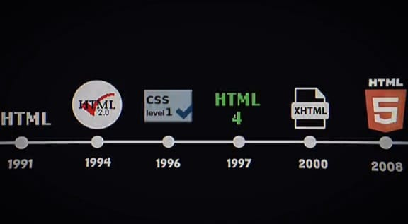
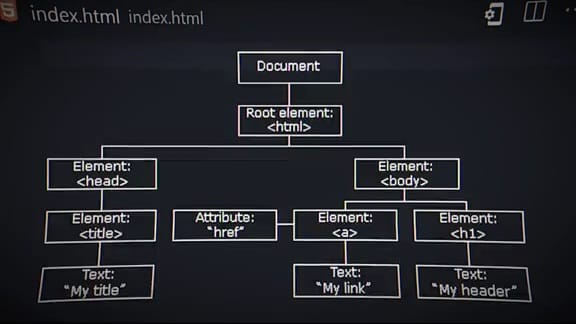

Tim Berners-Lee
Tim Berners-Lee
HTML (HyperText Markup Language) adalah bahasa markup yang digunakan untuk membuat struktur halaman web.
HTML pertama kali dikembangkan oleh Tim Berners-Lee pada tahun 1991 sebagai cara untuk mengatur dan menghubungkan dokumen di web. Versi pertama HTML adalah sederhana dan hanya mendukung teks dan link. Seiring perkembangan web, HTML terus diperbarui, dan saat ini kita menggunakan HTML5, yang memperkenalkan elemen multimedia dan peningkatan fungsionalitas.
<!DOCTYPE html>
<html lang="id">
<head>
<title>Judul Halaman</title>
</head>
<body>
<h1>Hello World</h1>
</body>
</html>

<ul>
<li>Item 1</li>
<li>Item 2</li>
</ul>
<table>
<tr>
<th>Nama</th>
<th>Umur</th>
</tr>
<tr>
<td>daeng adi</td>
<td>16</td>
</tr>
</table>
Atribut digunakan untuk memberikan informasi tambahan tentang elemen HTML. Atribut ditulis di dalam tag pembuka. Contoh atribut yang umum digunakan adalah href pada tautan dan src pada gambar.
<a href="https://www.example.com">Kunjungi Situs</a>
<img src="gambar.jpg" alt="Deskripsi Gambar">
<video width="320" height="240" controls>
<source src="video.mp4" type="video/mp4">
Browser Anda tidak mendukung video tag.
</video>
<audio controls>
<source src="audio.mp3" type="audio/mpeg">
Browser Anda tidak mendukung audio tag.
</audio>
Formulir digunakan untuk mengumpulkan input dari pengguna. Berikut adalah contoh formulir sederhana:
<form action="/submit" method="post">
<label for="nama">Nama:</label>
<input type="text" id="nama" name="nama">
<input type="submit" value="Kirim">
</form>